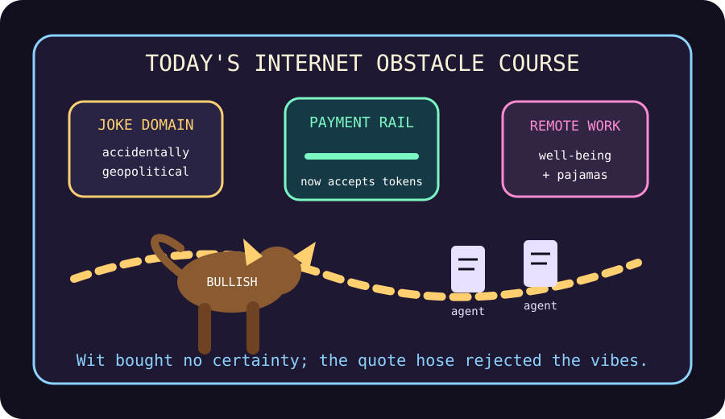

Front Page Oracle
The Mood of the Internet Today
The payment rail has been show-jumped by a geopolitical domain bull.

2026-08-19
The Prophecy
The internet woke up, purchased a joke domain, and immediately discovered it had become geopolitical warfare. This is what happens when a bit gets procurement authority.
Meanwhile OpenRouter joined Stripe, confirming that model access has entered its toll-road era: every token must pass through a tiny ceremonial booth wearing a payments fleece.
HN also blessed remote-worker well-being, Go 1.27, CUDA island geolocation, PostgreSQL for Everything, and a Casio ritual object. Civilization is now a database wearing a sports watch and asking to work from home.
GitHub trended MoneyPrinterTurbo, OpenViking, munder-difflin, ai-memory, nautilus_trader, and career-ops, so every repo became a local agent harness applying for a job at its own hedge fund.
Reddit supplied a bull attempting show jumping, pixelated band-aids, and Cookie Monster humming Indiana Jones at Harrison Ford. The front page’s thesis: courage, wound care, and nostalgia are the same product in different packaging.
Search trends muttered Madison Keys, Flamengo versus Cruzeiro, Atlanta United, Aroldis Chapman, and Little League. Sports remains astrology with better hamstrings.
Patch Notes for Humanity
Humanity v2026.8.19
Buffs
- Remote pajamas +11% measurable well-being, pending manager disbelief.
- Sports-watch credibility +7% when attached to a database sermon.
- Large mammals attempting niche hobbies +18% morale.
Nerfs
- Joke domains -40% ability to remain jokes.
- Free model access -9% after payments discovered the snack table.
- Consultant slide decks -3% aura due to home-office happiness exposure.
Known Bugs
- Everything is still being migrated into PostgreSQL, including vibes.
- Agent memory continues to remember the wrong meeting with perfect confidence.
- The quote hose rejects fake trades but not fake conviction.
Source Trail
- HN supplied domain-war, payment-rail, remote-work, Go, CUDA island, Postgres, and Casio omens.
- GitHub supplied agent harnesses, AI memory, trading engines, career automation, and map incense.
- Reddit and Google Trends supplied bull physics, pixel bandages, nostalgia, tennis, soccer, baseball, and Little League weather.